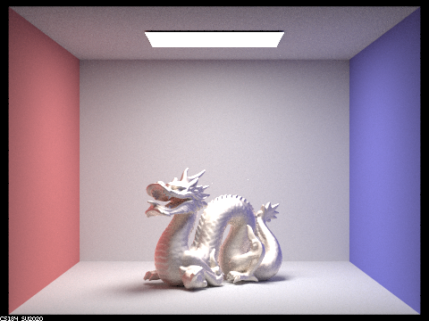

Overview:
In this project, we added different material types for objects that result in different lighting effects. From the two parts that I implemented, support for reflective, refractive
and glass material was added, as well as for microfacet materials. Conceptually, parts 1 and 2 weren't vastly different from what was done in assignment 3-1, but included a decent
amount more math in order to get these more complicated objects to work correctly.
Part 1:
Tasks 1 and 2 involved implementing the mirror material BSDF. The implementation is straightforward, using the provided total reflection equation from lecture in the reflect() function,
and then calling that function to calculate the wi and return the appropriate lighting. The refraction implementation is slightly more involved, but ultimately is just plugging in the
equations provided in the spec. The only other things to note are to check whether the refraction is starting within the refractive object or outside of it and setting the eta accordingly,
as well as checking for total internal reflection. The glass material implementation is just a combination of the previous two materials, probabilistically choosing whether to reflect or
refract based off of the computed Schlick's reflection coefficient.
Images rendered with 256 samples/pixel, 4 samples/light, and max ray depth = 7 unless stated otherwise
Spheres
Dragon
Lucy
Spheres 0 rays
Spheres 1 rays
Spheres 2 rays
Spheres 3 rays
Spheres 4 rays
Spheres 5 rays
Spheres 100 rays
At 0 rays, the expected zero bounce illumination image is present, where only the light is lit. At 1 ray, from the balls we only see light that is totally reflected from the overhead light, and the glass sphere has less of a reflection due to it probabilistically choosing between reflection and refraction as opposed to the mirror ball that always reflects. Moving from 2 rays forward, the spheres start taking on the expected appearances. The mirror ball shows the reflected surroundings since two bounces is the minimum for the light off of the surroundings to reach the viewing lens. However, the glass sphere remains very dark, showing only small amounts of reflection and refraction. This is because many samples are ending prematurely within the glass ball before reaching the camera because the the sampled light rays are bouncing around the ball with total internal reflection and not having enough bounces to leave the ball and be seen. When ray depth is increased, the glass ball takes on a more expected appearance since those rays now have the chance to properly bounce around the inside of the ball.
Part 2:
Part 2's implementation of microfacet surfaces is straightforward transcribing the equations described in the spec into the code. It's largely just bookkeeping to make sure no calculations go wrong.
The only portions not explicitly stated in the spec are translating from spherical coordinates to cartesian coordinates in order to get H from theta and phi, as well as reflecting wo across h. The cartesian
transformation calculations were found on wikipedia, and the calculations for the reflection was sourced from helpful piazza threads.
Images rendered with 256 samples/pixel, 4 samples/light, and max ray depth = 7 unless stated otherwise
CBbunny
Dragon
Spheres
Bunny
CBdragon rendered with different alpha values
a = 0.005
a = 0.05
a = 0.25
a = 0.5
As the alpha values decrease, the object looks more reflective, while as it goes up, the material becomes more matte.
Next two images rendered with 64 samples/pixel and 1 sample/light
CBbunny with hemisphere sampling
CBbunny with importance sampling
The hemisphere sampling looks relatively correct, but it has significantly more noise than with the importance sampling.
Eta values for R, G, and B are 0.96709, 1.3573, 2.1893. K values are 6.2738, 5.2210, 5.0244. These values correspond to tungsten.
